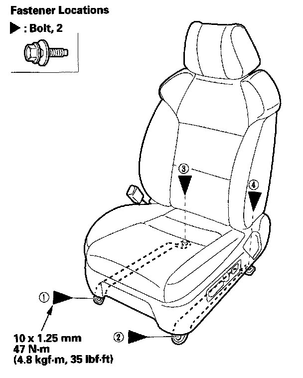

Front Seat
Front Seat Removal/InstallationSpecial Tools Required
KTC trim tool set SOJATP2014 *
* Available through the American Honda Tool and Equipment Program
SRS components are located in this area. Review the SRS component locations and the precautions and procedures before doing repairs or service.
NOTE:
- Put on gloves to protect your hands.
- When prying with a flat-tip screwdriver, wrap it with protective tape to prevent damage.
- Take care not to scratch the body or tear the seat covers.
- Use the appropriate tool from the KTC trim tool set to avoid damage when removing components.
1. Make sure you have the anti-theft code for the audio or the navigation system (if equipped).
2. Tilt the steering wheel all the way up, and telescope it all the way in.
3. Slide the front seat all the way forward, and adjust the seat to its maximum height. Carefully pry up on the bottom of the anchor cover (A) to release the tab (B) with a small flat-tip screwdriver from below inside the recline cover (C), then remove it.
4. Adjust the seat to its minimum height, then remove the lower anchor bolt (A).
5. Driver's side with navigation system: Gently pull the navigation unit cover (A) up to detach the clips, then remove the cover.
6. Driver's side with navigation system: Disconnect the navigation unit connectors (B).
7. Slide the seat all the way forward and remove the rear outer seat track end cover (A) and the rear inner seat track end cover (B).
8. Remove the bolts.

9. Slide the seat all the way back, and remove the front outer seat track end cover (A) and the front inner seat track end cover (B).
10. Remove the bolts.
11. Disconnect the negative cable from the battery, and wait at least 3 minutes before removing the seat.
12. Lift up the front seat, then disconnect the power seat harness connector (A) and the side airbag connector (B). Disconnect the ODS unit connector (C) on the passenger's seat.
13. Remove the head restraint.
14. With the help of an assistant, carefully remove the front seat through the front door opening.

15. Install the seat in the reverse order of removal, and note these items:
- Apply medium strength type liquid thread lock to the seat mounting bolts before reinstallation.
- Tighten the seat mounting bolts to the specified torque in the sequence shown. Slide the seat all the way back and tighten (1) and (2), then slide it forward and tighten (3) and (4). The driver's seat is shown; the passenger's seat is symmetrical.
- Make sure each connector is plugged in properly.
- Tighten the bolts by hand first, then tighten them to specification with a torque wrench.
- Reconnect the negative cable to the battery.
- Enter the anti-theft codes for the audio and navigation system (if equipped).
- Set the clock.
- Check for any DTCs that may have been set during repairs, and clear them.
- Do the steering column position memorization.